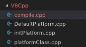
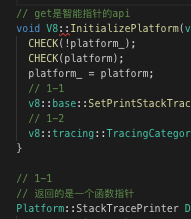

上一篇其实想讲初始化的第二步，但是内容比较无聊，所以换了一个话题，谈了谈v8的命名空间和宏，稍微轻松一下。
在这里还是接着说说初始化过程，毕竟写博客的初衷是对自己努力的记录，不是为了吸粉，这篇没图，对代码本身没有兴趣的可以跳过了。
再多说几句，讲一下我怎么看的源码吧。源码的一些方法涉及很多类和文件，所以我都会统一标注在弄到一个文件里，这样后期复盘可以比较方便，就像图中这样。

文件名代表源码的方法、类别、逻辑等等，就像vue的源码也被分割为diff、virtual-dom、parse等等模块一样。不过v8可不会给你搞这些，所以就需要自己去整理了。内容里，每一个方法、类构造的跳转都会进行标记，前面贴代码也能看到，就是1-1、1-2这些，后期考虑有没有别的更好方法。

就像上面这样，基本上每一个小点也会进行注释，毕竟C++平时工作不会用上，语法什么的容易忘。而且C++的类型是真的很随意，到处都是using、typedef，有可能这只是一个整数类型，但是为了语义化类型搞得跟类一样，比较典型的就是win的DWORD，实际上就是unsigned long，第一次见还以为是个多复杂的结构体，标注之后会视觉上的复杂性会减少很多。
目前先用这个来整理思路和学习，感觉还不错。最近是因为比较闲所以才写的多，如果比较繁忙，碎片时间看源码就会凸显一个很严重的问题，就是思路断档。之前尝试分析v8对JS代码的compile的时候就发现了，其过程十分的长，第一天看了一半，第二天忘了一部分后就接不上了。后面就暂时放弃过于繁琐的部分，并且开始寻找一个好方法可以整理源码。
开始贴代码环节，上一篇说过第二步的嵌入，实际上只是命名空间的转移，也就是将生成的platform赋值到另一个namespace中。
v8::Platform* V8::platform_ = nullptr;
void V8::InitializePlatform(v8::Platform* platform) {
CHECK(!platform_);
CHECK(platform);
// 将普通的platform对象转移到v8::platform命名空间下
platform_ = platform;
// 1-1
v8::base::SetPrintStackTrace(platform_->GetStackTracePrinter());
// 1-2
v8::tracing::TracingCategoryObserver::SetUp();
}如上所示，v8::Platform的命名空间下声明了一个platform类型的变量，这里只是简单的进行赋值。但肯定不仅仅这么一点，后面还有两步内容，分别是设置调用栈打印方法和调用栈追踪类的初始化。
第一个设置也是很简单的命名空间转移，函数已经在默认Platform上定义好了，如下。
// v8::platform
// 预定义
void PrintStackTrace() {
v8::base::debug::StackTrace trace;
trace.Print();
// Avoid dumping duplicate stack trace on abort signal.
v8::base::debug::DisableSignalStackDump();
}
Platform::StackTracePrinter DefaultPlatform::GetStackTracePrinter() {
return PrintStackTrace;
}
// v8::base
void (*g_print_stack_trace)() = nullptr;
void SetPrintStackTrace(void (*print_stack_trace)()) {
g_print_stack_trace = print_stack_trace;
}这个方法后面专门来讲，初始化时候只是赋值，并没有调用。
第二步的初始化也比较简单。
// v8::tracing
TracingCategoryObserver* TracingCategoryObserver::instance_ = nullptr;
void TracingCategoryObserver::SetUp() {// 生成一个新的Observer 这个类构造函数没什么特殊
TracingCategoryObserver::instance_ = new TracingCategoryObserver();// v8::platform::tracing
i::V8::GetCurrentPlatform()->GetTracingController()->AddTraceStateObserver(TracingCategoryObserver::instance_);
}
void TracingController::AddTraceStateObserver(v8::TracingController::TraceStateObserver* observer) {
{
base::MutexGuard lock(mutex_.get());
// TracingController的属性std::unordered_set<v8::TracingController::TraceStateObserver*> observers_;
// insert是unordered_set的插入方法
observers_.insert(observer);
if (!recording_.load(std::memory_order_acquire)) return;
}// Fire the observer if recording is already in progress.
observer->OnTraceEnabled();
}在前面的platform属性介绍里讲过，除了线程相关，还有两个工具类，一个就是这里的TracingController。这里生成了一个调用栈的观察者对象，并将其加入类的一个无序SET属性中。
最后一步是根据默认参数来启动Observer对不同状态runtime的追踪，全是宏，太麻烦了，有兴趣的自己去研究吧。